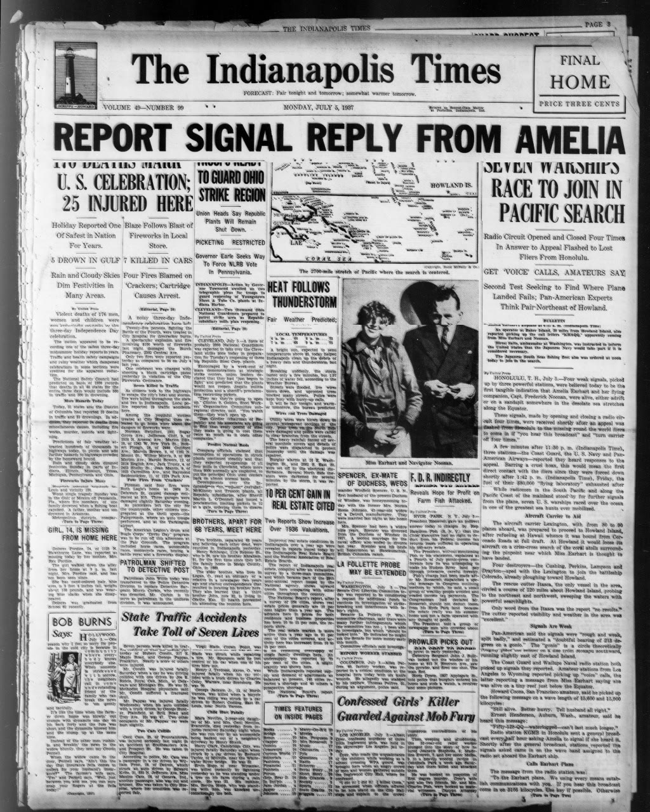
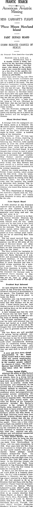
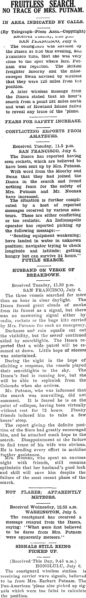

HN HN-508 · July 5, 1937 · Transportation & Maritime > Transportation Accidents & Safety Investigations > Missing aircraft and aviation searches
Source: Indianapolis Times, p. 1 — original page; Smithsonian National Air and Space Museum, Amelia Earhart.
Report: An early front-page headline said “Report Signal Reply From Amelia†as the search for Amelia Earhart and Fred Noonan, missing on their July 2 flight, continued.
Assessment: This is an attributed search-time radio claim, not an authenticated message from Earhart. Her aircraft's fate was not proved by the reported signal. Confirmation would require radio logs, frequencies, timings, and investigators' authentication; those have not been established by this page.
Identity-review candidate peers: HN-509:Algorithmic
Authentic images retrieved from Hoosier State Chronicles (Indiana State Library) and Papers Past (National Library of New Zealand). Article crops are located using the archive's own OCR word coordinates and rendered at native crop resolution; article clips are assembled from the archive's own article-block images; page images marked "archive tiles" are stitched from the archive's own tiled page service at its 256-px tile cap; page images marked "issue PDF" are single pages rasterised from the archive's own issue PDF, with the page chosen by matching the headline against the PDF's text layer; page scans are reduced-size access renditions. No images were generated, mocked, or retouched.



Not yet acquired. Queued for provider-specific acquisition testing (see source-acquisition manifest).
URL (preserved verbatim): https://newspapers.library.in.gov/?a=d&d=IPT19370705.1.1
Saved research report: Historical_Newspaper_Event_Research_503-527_2026-10-23.md
Evidence note: A newspaper report means a historical publication made a claim; it does not establish that claim as fact. Contemporary reporting is separated from later scholarly context and our own assessment.